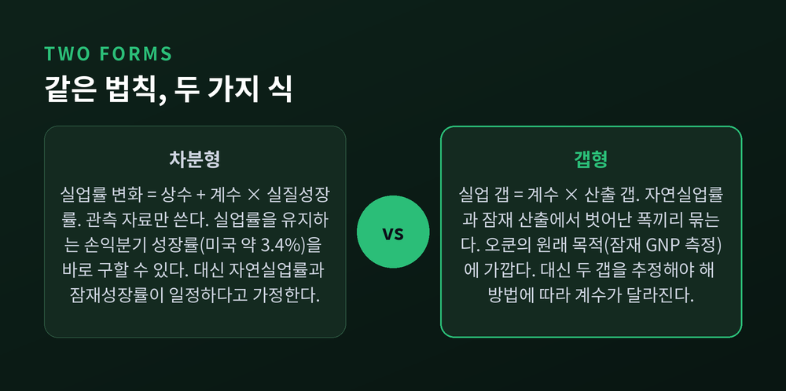
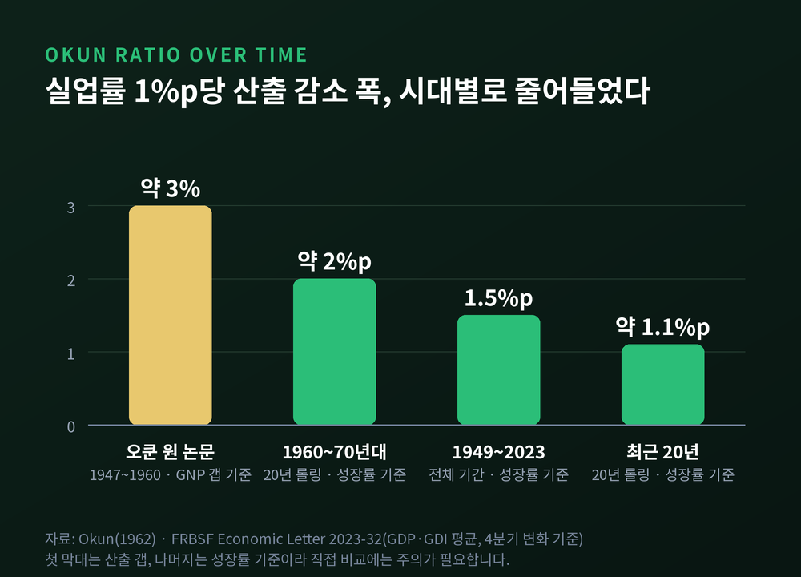
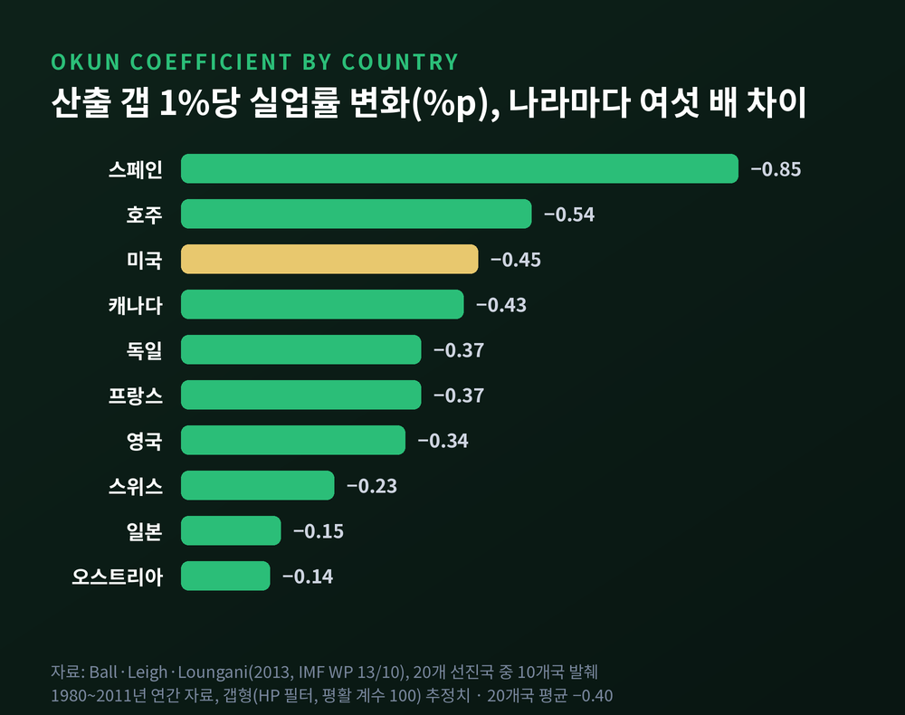
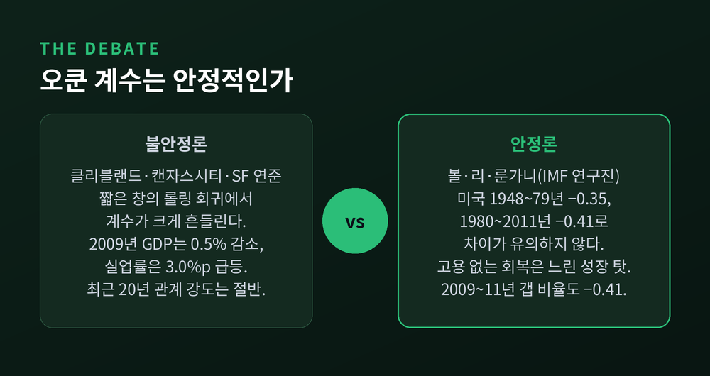
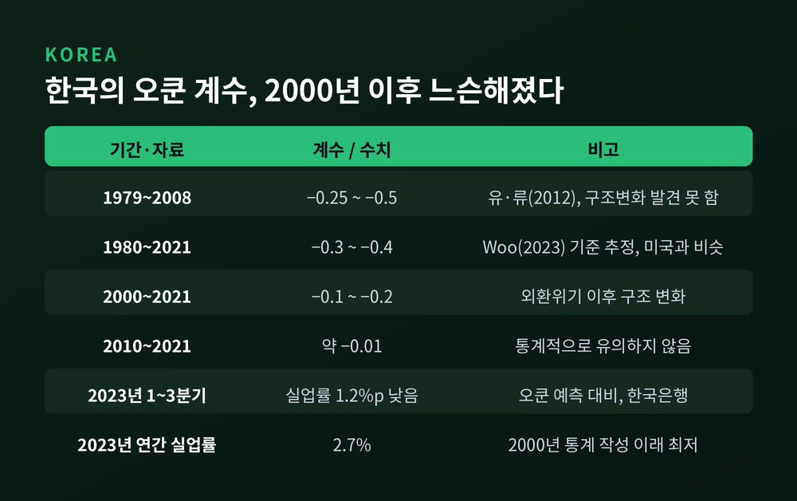

오쿤의 법칙, 실업률 1%p 오르면 GDP는 얼마나 줄어드는가

이번 글에서는 경기와 실업을 잇는 가장 유명한 경험칙, 오쿤의 법칙을 정리해 보겠습니다. 1962년 원 논문의 숫자에서 출발해, 이 관계를 쓰는 두 가지 방식과 나라마다 다른 계수, 그리고 한국에서 이 법칙이 얼마나 약해졌는지까지 차례로 살펴봅니다.
먼저 답부터 드리겠습니다.
- 오쿤이 1962년에 찾은 숫자는 "실업률 1%p당 GNP 약 3%"였습니다.
- 오늘날 미국 추정치로 환산하면 산출 갭 기준 약 2~2.5%, 성장률 기준으로는 1.1~1.5%p 정도입니다.
- 한국은 2000년 이후 이 연결이 크게 느슨해졌고, 2010년대 이후 추정에서는 통계적으로 거의 보이지 않습니다.
1962년, 오쿤이 원래 재려던 것
아서 오쿤의 논문 제목은 「잠재 GNP: 그 측정과 의미」였습니다. 실업을 설명하려던 글이 아니었습니다.
그가 알고 싶었던 것은 하나였습니다. 완전고용 상태라면 경제가 얼마나 생산할 수 있는가. 잠재 산출은 눈에 보이지 않으니, 눈에 보이는 실업률을 자로 삼아 거꾸로 재보자는 발상이었습니다.
오쿤은 1947~1960년 미국 분기 자료를 썼습니다. 완전고용 실업률은 4%로 가정했습니다. 그리고 이런 규칙성을 보고합니다. 실업률이 4%를 넘어서는 1%p마다 실질 GNP가 약 3%씩 모자랐다는 것입니다.
세인트루이스 연준은 이를 "미국의 오쿤 계수는 3"이라고 요약합니다.
직관적으로는 이상한 숫자입니다. 일하는 사람이 1% 줄면 생산도 1% 남짓 줄어야 할 것 같기 때문입니다. 오쿤의 설명은 이랬습니다. 불황에는 근로시간이 줄고, 일자리를 포기한 사람은 실업자 통계에서 빠집니다. 측정된 실업률은 실제 유휴 노동의 일부만 보여준다는 것입니다.
그래서 실업률 1%p 뒤에는 그보다 훨씬 큰 생산 손실이 숨어 있습니다.
같은 법칙, 두 가지 식: 차분형과 갭형
오쿤은 원 논문에서 이 관계를 두 가지 방식으로 적었습니다. 지금도 연구자들은 이 둘을 나란히 씁니다.
첫째는 차분형입니다. 실업률이 얼마나 변했는지를 실질성장률에 연결합니다. 오쿤이 보고한 식은 "실업률 변화 = 0.30 − 0.30 × 분기 성장률"이었습니다. 성장이 0이면 한 분기에 실업률이 0.3%p 오른다는 뜻입니다.
캔자스시티 연준의 크노텍은 오쿤 당시 쓸 수 있던 자료로 이 식을 다시 추정했습니다. 연율 성장률 기준으로 실업률을 제자리에 묶어 두려면 연 4%를 조금 넘는 성장이 필요했습니다. 1948~2007년 전체 자료로 다시 돌려도 계수는 −0.07로 거의 같았습니다.
차분형의 장점은 관측 가능한 숫자만 쓴다는 점입니다. 여기서 '손익분기 성장률'이라는 유용한 개념이 나옵니다. 미국 연간 자료로 보면 "실업률 변화 = 1.20 − 0.35 × 성장률"이 되어, 실업률이 내려가려면 약 3.4% 넘게 성장해야 합니다. 클리블랜드 연준도 1948~2011년 자료에서 같은 3.4%를 얻었습니다.
둘째는 갭형입니다. 실업률이 자연실업률에서 벗어난 폭(실업 갭)을, 실제 산출이 잠재 산출에서 벗어난 폭(산출 갭)에 비례시킵니다. 오쿤의 원래 목적인 잠재 산출 측정에 더 가까운 형태입니다.
문제는 두 갭 모두 관측할 수 없다는 점입니다. 연구자들은 추세 필터나 의회예산처(CBO) 추정치로 이를 대신합니다. 그리고 그 선택에 따라 계수가 달라집니다.

두 식의 관계도 간단합니다. 자연실업률이 일정하고 잠재성장률도 일정하다고 가정하면, 갭형을 차분한 것이 곧 차분형입니다. 뒤집어 말하면 차분형은 그 두 가지 가정을 조용히 깔고 있습니다. 볼·리·룬가니는 많은 나라에서 이 가정이 현실적이지 않다고 지적합니다.
왜 1대1이 아니라 절반 남짓인가
국제통화기금(IMF) 연구진인 볼, 리, 룬가니는 오쿤의 법칙을 두 단계로 쪼갭니다. 산출이 고용을 움직이고, 고용이 실업률을 움직입니다. 오쿤 계수는 이 두 반응의 곱입니다.
노동의 산출 기여도가 약 3분의 2라면, 산출 1%를 늘리는 데 고용은 1.5% 늘어야 계산이 맞습니다. 하지만 기업은 사람을 바로 뽑거나 내보내지 않습니다. 먼저 근로시간과 작업 강도를 조절합니다. 그래서 고용 반응은 1.5보다 작아집니다.
고용과 실업 사이에도 완충이 있습니다. 일자리가 늘면 쉬던 사람들이 구직에 나서 경제활동인구가 늘어납니다. 고용이 늘어난 만큼 실업률이 떨어지지 않는 이유입니다.
미국 1948~2011년 추정치를 보면 산출→고용 반응은 0.54, 고용→실업 반응은 −0.73이었습니다. 둘을 곱하면 −0.40 안팎이 나오고, 직접 추정한 오쿤 계수 −0.41과 거의 일치합니다.
실업률 1%p당 GDP, 숫자는 계속 작아졌다
이제 제목의 질문으로 돌아가 보겠습니다. 답은 어느 시대, 어느 식으로 재느냐에 따라 다릅니다.
오쿤의 1962년 답은 약 3%였습니다.
현대 교과서가 흔히 쓰는 기준은 "산출 갭 1%에 실업률 0.5%p"입니다. 볼 외 연구진의 미국 추정치는 −0.4에서 −0.5 사이였고, 설명력(R²)은 약 0.8이었습니다. 이를 단순히 뒤집으면 실업률 1%p가 산출 약 2~2.5%에 해당합니다.
샌프란시스코 연준의 2023년 분석은 성장률 기준으로 답합니다. 1949~2023년 전체로 보면 실업률 1%p 상승은 성장률 1.5%p 하락과 짝을 이룹니다. 20년 단위로 끊어 보면 1960~70년대에는 약 2%p였습니다. 최근 20년은 약 1.1%p입니다. 관계의 강도가 대략 절반으로 줄어든 셈입니다.

여기서 한 가지 주의할 점이 있습니다. "3"이나 "1.5"는 산출을 실업으로 설명한 방향의 숫자이고, "−0.45"는 실업을 산출로 설명한 방향의 숫자입니다. 같은 관계를 반대편에서 본 것이니, 기사나 교재를 읽을 때 어느 쪽 숫자인지 먼저 확인하시길 권합니다.
나라마다 계수가 다른 이유
볼 외 연구진은 1980~2011년 선진 20개국의 계수를 같은 방법으로 비교했습니다. 결과는 꽤 넓게 퍼져 있었습니다.
스페인은 −0.85로 가장 컸습니다. 미국은 −0.45, 캐나다는 −0.43, 독일과 프랑스는 −0.37이었습니다. 일본은 −0.15, 오스트리아는 −0.14로 가장 작았습니다. 대부분은 −0.23에서 −0.54 사이에 모여 있었습니다.

나라별 사정을 들여다보면 이유가 보입니다.
스페인은 1980년대 개혁 이후 기간제 계약이 고용의 약 3분의 1을 차지했습니다. 경기가 꺾이면 계약을 갱신하지 않는 방식으로 고용이 빠르게 줄어듭니다.
일본은 종신고용 관행 때문에 기업이 해고를 꺼립니다. 법이 아니라 관행이라는 점이 중요합니다. 스위스는 외국인 노동자가 들어오고 나가며 고용 변동을 흡수합니다. 그래서 실업률이 잘 움직이지 않습니다.
흥미로운 대목은 해고 규제입니다. 세인트루이스 연준은 해고가 쉬운 미국·캐나다·영국에서 실업률 반응이 크다고 설명합니다. 반면 볼 외 연구진은 OECD 고용보호법제 지수와 계수 사이에 의미 있는 관계를 찾지 못했습니다. 부호조차 반대였습니다. 한 가지 지표보다 나라마다의 고유한 관행이 더 크게 작용한다는 해석입니다.
2008~2009년 독일도 좋은 예입니다. 오쿤의 법칙대로라면 실업률이 2.2%p 올라야 했지만, 실제로는 0.3%p 내렸습니다. 근로시간을 줄여 일자리를 나눈 제도의 결과였습니다.
계수는 안정적인가, 두 진영의 논쟁
이 법칙이 믿을 만한 경험칙인지를 두고는 연구자들의 평가가 갈립니다.
불안정하다는 쪽의 근거는 이렇습니다. 클리블랜드 연준은 10년씩 창을 옮겨 가며 추정한 결과, 계수가 "안정과는 거리가 멀다"고 결론 내렸습니다. 2009년 실질 GDP는 0.5% 줄었는데 실업률은 3.0%p나 뛰었습니다. 2011년에는 성장률이 1.6%에 그쳤는데도 실업률이 9.1%에서 8.3%로 내려갔습니다. 크노텍 역시 표본에 경기침체 분기가 많을수록 계수가 커진다는 점을 보였습니다. 그는 오쿤의 법칙을 "구조적 특징이 아닌 통계적 관계"라고 불렀습니다.
안정적이라는 쪽도 만만치 않습니다. 볼 외 연구진은 미국 1948~1979년 계수 −0.35와 1980~2011년 −0.41이 통계적으로 다르지 않다고 봤습니다. 이른바 '고용 없는 회복'도 법칙이 깨진 것이 아니라고 설명합니다. 회복 속도 자체가 느려 산출 갭이 오래 남았을 뿐이라는 것입니다. 실제로 2009~2011년 평균 산출 갭은 −10.8%, 실업 갭은 4.4%p로, 비율이 정확히 −0.41이었습니다.

두 진영의 차이는 상당 부분 방법에서 나옵니다. 짧은 창의 차분형 회귀는 흔들리고, 갭형과 전체 표본 검정은 견고해 보입니다. 어느 쪽이 옳다기보다 무엇을 묻느냐의 문제에 가깝습니다.
최근 연구는 이 논쟁에 '국면'이라는 변수를 더합니다. 2025년 92개국 1980~2023년 자료를 분석한 연구는, 불황기에는 계수가 가파르고 확장기에는 완만하며 회복기에는 약하거나 유의하지 않다고 보고했습니다.
코로나19는 이 흔들림을 선명하게 보여줬습니다. 2020년 중반 회복 초기에는 실업률이 오쿤 예측보다 높았습니다. 채용이 어려웠기 때문입니다. 2021년 중반부터는 반대로 예측보다 낮았습니다. 성장이 둔화하면서 법칙상 실업률은 평균 5% 안팎까지 올라야 했지만, 실제로는 3.7% 근처에 머물렀습니다. 기업들이 다시 뽑기 어려울 것을 걱정해 사람 대신 근로시간을 줄였다는 해석, 곧 '노동 비축'입니다.
한국의 오쿤의 법칙: 느슨해진 연결
한국은 볼 외 연구의 20개국에 들어 있지 않았습니다. 이 빈자리를 채운 것이 2023년 미국 드폴대학교 재준 우(Jaejoon Woo) 교수의 연구입니다.
1980~2021년 전체로 보면 한국의 계수는 −0.3에서 −0.4였습니다. 미국과 비슷한 수준입니다. 단순히 뒤집으면 실업률 1%p가 산출 약 2.5~3.3%에 해당합니다.
그런데 기간을 나누면 그림이 달라집니다. 1997~98년 외환위기 이후 2000년 무렵에 구조 변화가 나타났습니다. 2000년 이후 계수는 −0.1에서 −0.2로 약해졌습니다. 2010~2021년에는 −0.01 수준으로, 더는 통계적으로 유의하지 않았습니다.

연구는 원인을 여럿 꼽습니다. 성장률 자체의 둔화, 영업이익으로 이자도 못 갚는 한계기업의 증가, 자본·기술집약 산업으로의 이동, 노동절약형 기술, 경직적인 해고 규제, 청년층의 숙련 불일치입니다. 2008년 이후 저소득층과 고령층이 생계 때문에 노동시장에 나오면서, 고용이 늘어도 실업률이 덜 떨어지는 현상도 겹쳤습니다.
불황과 호황의 비대칭도 드러났습니다. 2000~2021년에는 불황기 계수가 확장기보다 뚜렷하게 작았습니다. 경영상 이유의 해고가 어려운 제도가 불황기 실업률 상승을 눌러 둔다는 설명입니다.
한국은행의 2024년 1월 분석도 같은 방향을 가리킵니다. 2023년 1~3분기 실업률은 오쿤의 법칙이 시사하는 수준보다 1.2%p 낮았습니다. 같은 해 연간 실업률은 2.7%로, 2000년 통계 작성 이래 가장 낮았습니다. 한국은행은 인력난을 우려한 기업들이 해고 대신 근로시간을 줄였다고 봤습니다. 실업률 하락의 92%가 실업으로 새로 들어오는 사람이 줄어든 데서 나왔고, 이는 과거 평균 71%보다 높은 수치였습니다.
예전에는 성장률 숫자만 보고도 실업률의 방향을 가늠할 수 있었습니다. 지금 한국에서는 그 연결이 한 번 더 걸러져 나옵니다.
이 숫자를 어떻게 읽어야 할까
오쿤의 법칙은 여전히 쓸모가 있습니다. 의회예산처의 잠재 산출 추정, 교과서의 총공급곡선, 코로나19 때의 고용 전망까지 곳곳에 쓰입니다. 볼 외 연구진은 필립스 곡선보다 훨씬 믿을 만한 관계라고 평가하기도 했습니다.
다만 읽는 방법에는 몇 가지 원칙이 필요하다고 생각합니다.
- 어느 방향의 계수인지 확인합니다. 실업→산출(3, 1.5)인지, 산출→실업(−0.45)인지.
- 어느 형태인지 확인합니다. 성장률을 쓰는 차분형인지, 잠재 산출을 추정한 갭형인지.
- 어느 나라, 어느 시기의 숫자인지 확인합니다. 스페인과 일본은 여섯 배 가까이 다르고, 한국은 20년 사이에 크게 달라졌습니다.
한계도 분명합니다. 잠재 산출과 자연실업률은 끝내 관측되지 않습니다. 추정 방법을 바꾸면 계수도 따라 움직입니다. 이 법칙이 알려주는 것은 평균적인 경향이지, 다음 분기의 정답이 아닙니다.
정리하면 이렇습니다.
1962년의 "1대3"은 지금 미국에서 "1대2 남짓"으로, 한국에서는 그보다 훨씬 희미한 선으로 바뀌었습니다. 기업이 사람 대신 시간을 조정하고, 노동시장이 다른 경로로 충격을 흡수하게 되면서 생긴 변화입니다.
"실업률은 경기를 비추는 거울이지만, 그 거울의 배율은 나라와 시대마다 다르다."
그래서 이 법칙이 아직 유효하냐고 물으신다면, 방향은 여전히 맞지만 눈금은 매번 다시 읽어야 한다고 답하겠습니다.